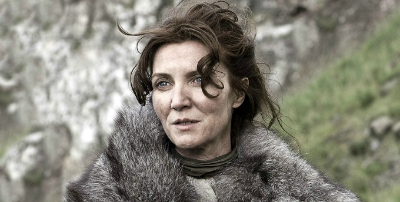
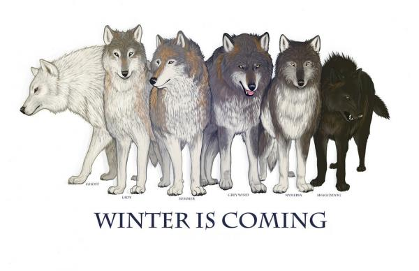
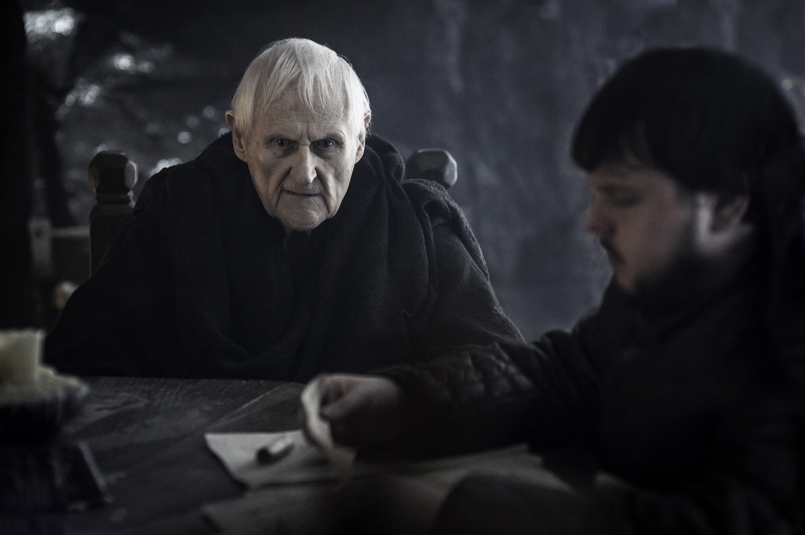
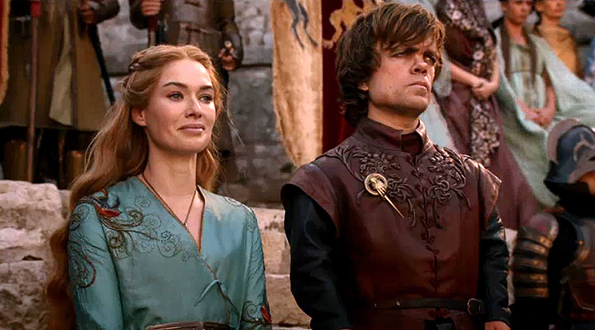
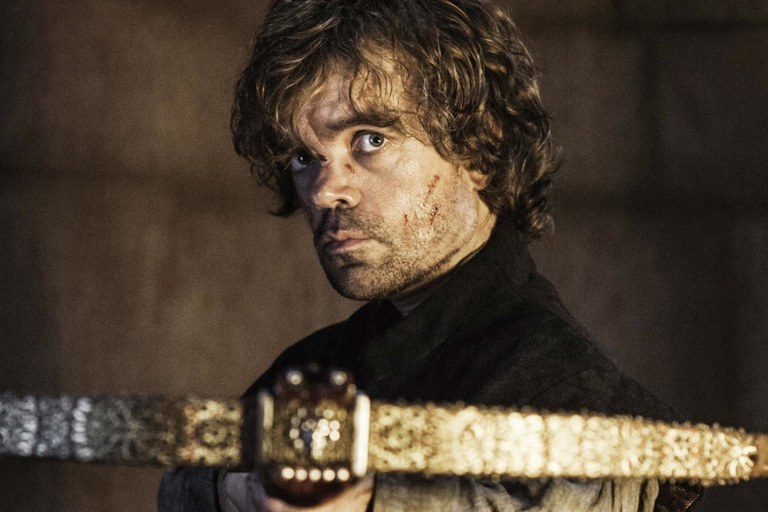
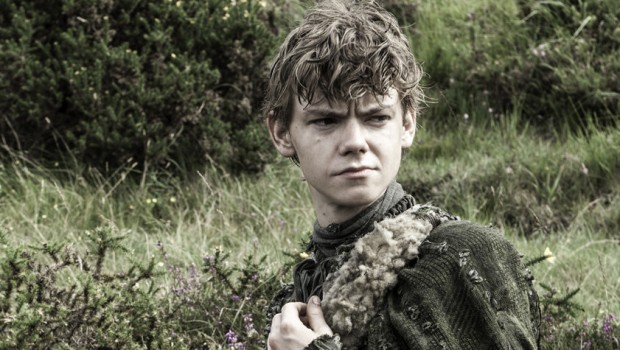
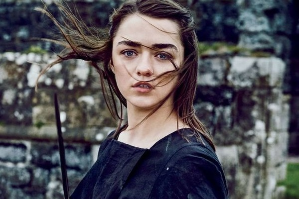
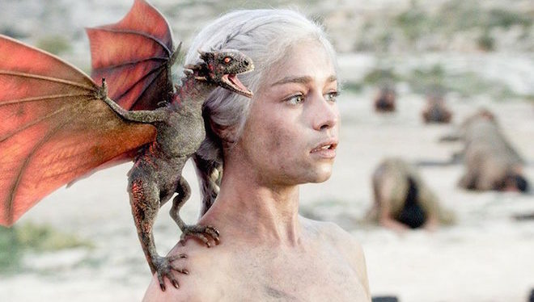

24 CURIOSIDADES DE GAME OF THRONES
#1 El piloto original de la serie nunca salió al aire.
La serie casi fracasa al haber hecho un piloto que HBO consideró
"muy malo". Varios actores fueron cambiados y se filmó de nuevo
casi por completo.
#2 Catelyn Stark es la madre de Hermione Granger
En Harry Potter and the Deathly Hallows podemos ver a Michelle Fairley en una escena,
revelando ser la mamá de Hermione.

#3 Los lobos que salen en la primer temporada fueron interpretados por perros Inuit del Norte,
los cuales parecen lobos verdaderos. Después estos fueron cambiados por lobos introducidos digitalmente para hacerlos ver más grandes.

#4 Empezó como actriz de pornografía.
La actriz que interpreta a Shae, la pareja de Tyrion, empezó su carrera como actriz pornográfica.
#5 Sexposition. Se le acredita a la serie con haber inventado el término "sexposition",
que es cuando se revelan importantes puntos en la historia mientras ocurren escenas de sexo.
#6 Maester Aemon sí es ciego. El actor que interpreta a Maester Aemon en la serie es ciego en la vida real,
tal como su personaje.

#7 El final de los libros George R.R. Martin, escritor de la serie A Song of Ice and Fire,
en la cual se basa la serie Game of Thrones, ha revelado el final de la historia a los productores de la serie,
por si este no termina los libros antes de su muerte.
#8 Joffrey Baratheon en Batman Begins. En la película Batman Begins podemos ver en una escena a Jack Gleeson como un pequeño e inocente niño,
quién diría que se convertiría en el malvado Joffrey.

#9 Tyrion y Cersei no se odian. Peter Dinklage (Tyrion Lannister) y Lena Heady (Cersei Lannister)
son muy buenos amigos en la vida real, incluso antes de Game of Thrones. Peter Dinklage ayudó a que Lena consiguiera el papel de Cersei.

#10 Era obvio que era el indicado. Peter Dinklage fue el primero en ser elegido para el papel de Tyrion Lannister,
y todos sabemos que nunca se podría haber elegido a un personaje mejor.

#11 Stannis Baratheon es el padre de Tom Riddle. El actor que interpreta al rudo Stannis Baratheon es el padre del actor que interpretó a
Tom Riddle en las películas de Harry Potter.
#12 Hay versión pornográfica de todo
Game of Thrones no se salva de su versión pornográfica, llamada Game of Bones.
#13 Sansa y Arya son amigas.
Las dos actrices que interpretan a las hermanas Stark son muy amigas en la vida real.
#14 El lenguaje Dothraki. Este lenguaje Dothraki fue creado sólo para la serie,
ya que en el libro se describe pero nunca se habla como tal. Se inventaron más de 3000 palabras para esto.

#15 Jojen Reed es viejo.
El personaje de Jojen Reed tiene 13 años, pero el actor que lo interpreta tiene 23 años en la vida real.

#16 El hermano de Lilly Allen
Alfie Allen, el actor que interpreta a Theon Greyjoy, es el hermano de Lilly Allen.
#17 Descendiente de Charles Dickens
El actor que interpreta al hermano de Daenerys, Harry Lloyd, es el tatara-tataranieto de Charles Dickens.
#18 La nieta de Charlie Chaplin
La actriz que interpreta a la esposa de Robb Stark, Oona Chaplin, es la nieta de Charlie Chaplin.
#19 Bronn era famoso
Jerome Flynn perteneció a un dúo de los años '90 llamado Robson and Jerome, tienen 3 éxitos en número 1 en Inglaterra.
#20 El primer papel de Arya Stark
Maisie Williams interpreta su primer papel de su vida como Arya Stark, un muy buen comienzo para una pequeña actriz.

#21 Sansa Stark adoptó a su lobo
Sophie Turner, la actriz que interpreta a Sansa Stark adoptó al perro que protagonizó a su lobo en la serie, llamado Zunni.
#22 Más de 150 bebés fueron nombrados "Khaleesi" en el 2012
Khaleesi es la palabra en Dothraki para "reina" en la serie y en los libros. Al parecer muchos padres creyeron que este era un buen nombre para sus hijas.
!Esperemos que no las afecte sus vidas adultas¡
#23 El corazón de caballo que se come Daenerys en realidad fue hecho de gomitas.
Ya que Peter Dinklage es vegetariano, toda la carne que come durante la serie, no es real.
#24 Emilia Clarke es quien hace la voz de la novia del Dr. Zoidberg en Futurama.
